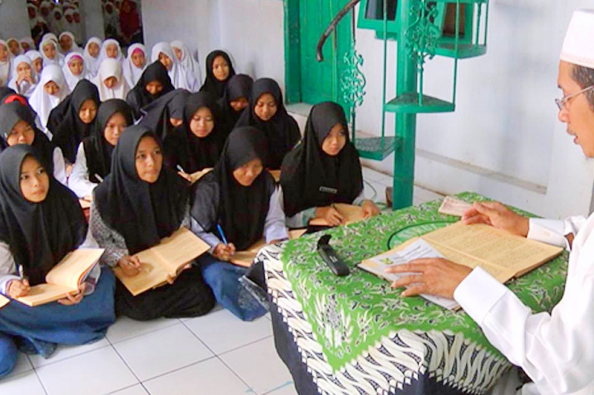
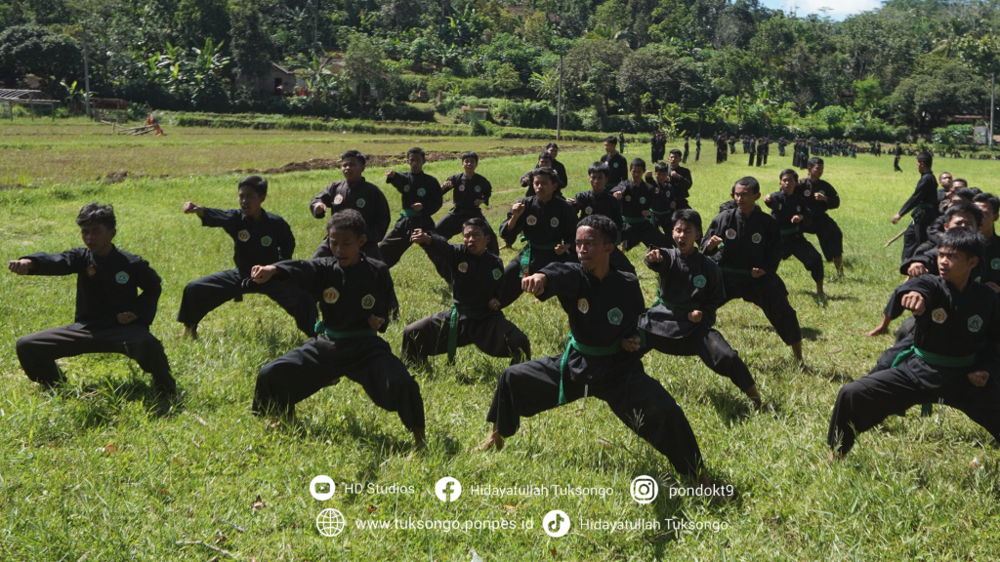
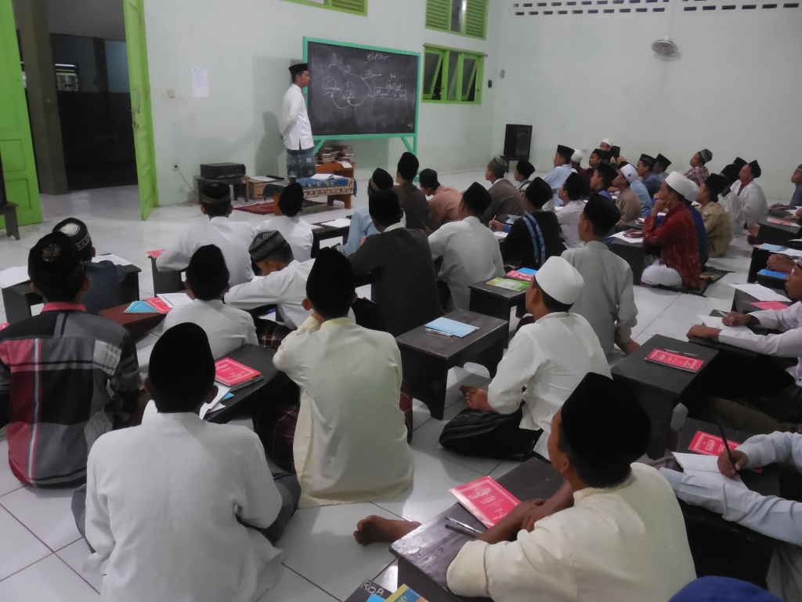

Pengajian Kitab
Santri mengikuti pengajian kitab kuning setiap pagi dan sore yang dipimpin oleh para kyai.

Latihan Beladiri
Beladiri merupakan kegiatan ekstrakurikuler yang diadakan setiap minggu untuk melatih fisik dan mental santri.

Praktik Qiro'ah
Santri diajarkan cara membaca Al-Qur'an dengan baik melalui kelas qiro'ah yang diadakan rutin setiap minggu.

Diskusi Agama
Kegiatan diskusi agama untuk mengasah pemahaman dan wawasan santri tentang agama Islam.